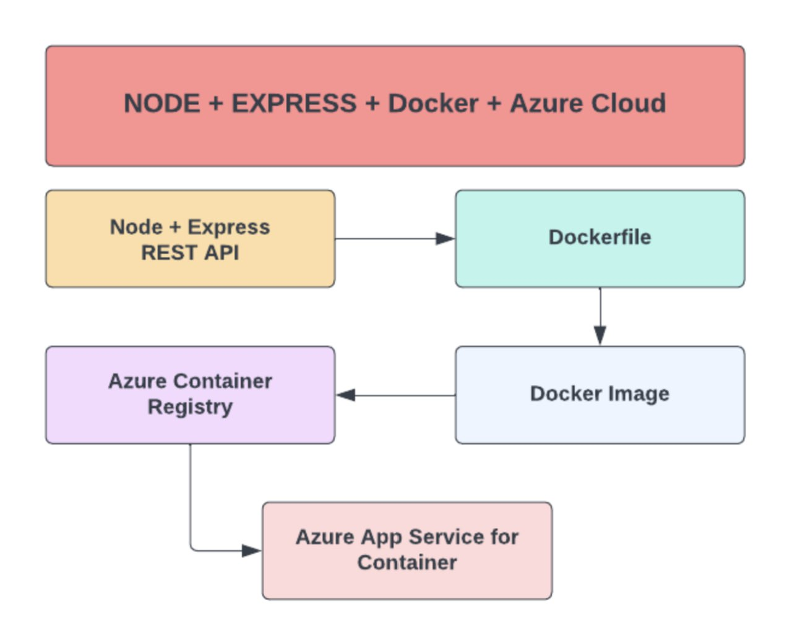
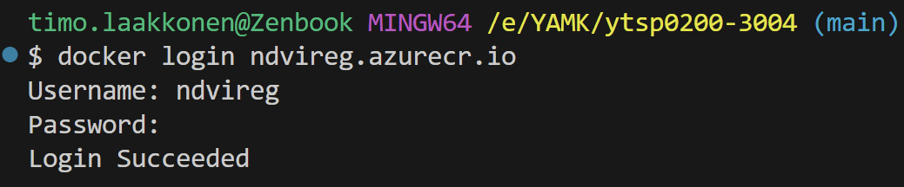
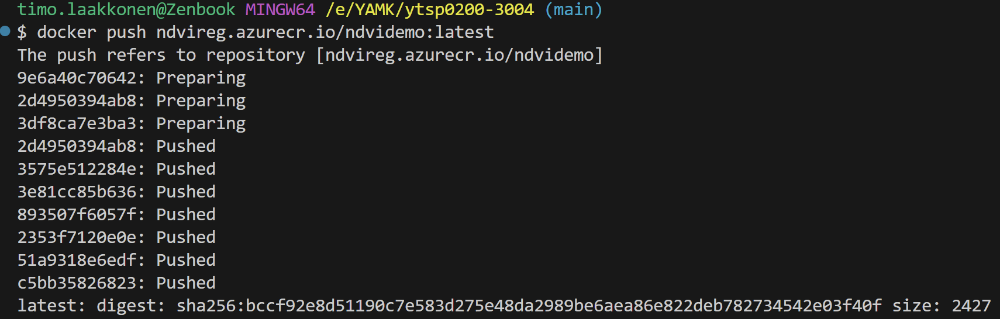
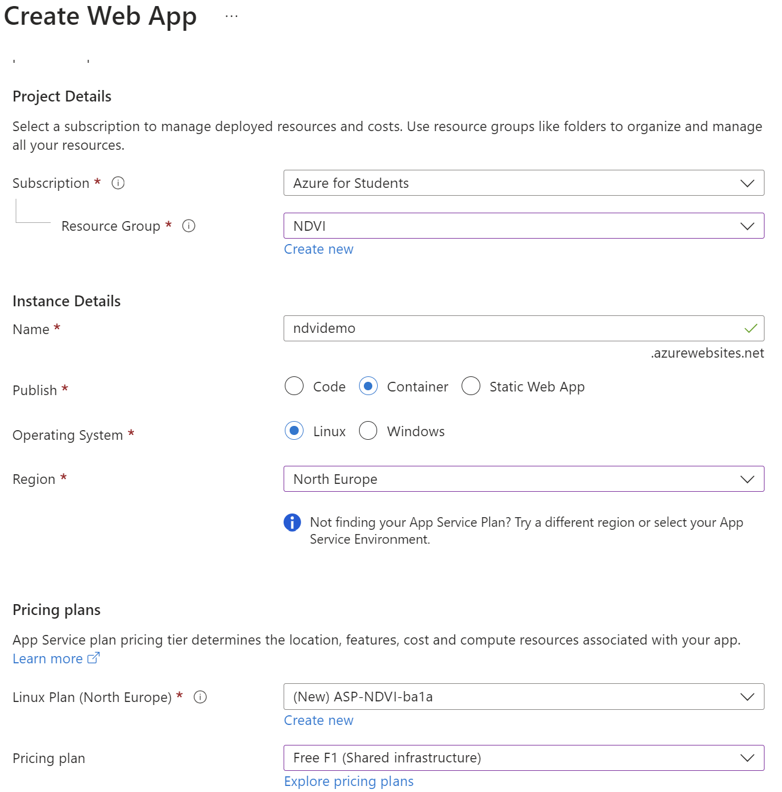

Deployment
In this case the app is deployed to Azure webservice as an container. now the MERN Stack runs on container in Azure web service...
!!!! frontend lisätään build ja serverille static asetus
HUOM selaimessa PWA asennus
LISÄÄÄ frontend build folder to the root of the server code
app.js
app.use(express.static("build"));
// If the URL contains 'login' or 'register', pass without token validation if (url === '/' || url.includes('login') || url.includes('register')) { return next(); }
The idea
The idea is containerize an application
(Azure web app container /-register)

https://portal.azure.com/
laakkti@outlook.com https://portal.azure.com/#@laakktioutlook.onmicrosoft.com/resource/subscriptions/08680159-3a33-4f02-a0f1-1b648e13f8a5/resources
tähän vois tulla anmation gif koko jutusta
Dockerfile
FROM node:18
COPY . .
RUN npm install
CMD ["npm", "start"]
.dockerignore
.node_modules
Container Registry
Registry name (Username): ndvireg Login server: ndvireg.azurecr.io password: Tm9qFwxVD4/DSPi3LmEomsuvW9NDOUlb8f1/Rtp7t3+ACRApVSqe password2: 7+aJFEG6LSKQYgic1rueERF7FKEtCHsfgHUy1FqfUM+ACRCBU4qY
docker login ndvireg.azurecr.io
Username: ndvireg
Password: Tm9qFwxVD4/DSPi3LmEomsuvW9NDOUlb8f1/Rtp7t3+ACRApVSqe

Building the Docker Image
docker build -t ndvireg.azurecr.io/ndvidemo:latest .
with command
docker images
can be seen that image is really created
Deploying to Azure
To push the image from your local to the Azure Container Registry
docker push ndvireg.azurecr.io/ndvidemo:latest

Azure Web App
Hosting the container from register

Continuous Deployment
Url for the server
https://ndvidemo.azurewebsites.net
Updating changes
docker build -t ndvireg.azurecr.io/ndvidemo:latest .
docker push ndvireg.azurecr.io/ndvidemo:latest
REMARKS (tee tyyli punaisella!!!)
!!!!!!!!! ei aina päivity!!!! joten container registryn repository deletetoitava sekä jos kus serveri päivityksen jälkeen käynnistettävä!!!
Container registry ndvireg | Repositories DELETE
Testing Docker image in local on Docker Desktop
tai sitten vaan komento riviltä run ...
E:\YAMK\ytsp0200-3004\backend_doc\docs\img
Pipeline
Azure pipeline on Azure DevOps. Pipeline is more advanced for deployment
pipeline is triggered by git push
Creating a pipeline
First the repository for Azure DevOps https://dev.azure.com/ project have to be created
the source files should be pushed to the repository of Azure DevOps.
Step by step

azure-pipelines.yml
Azure Devops generated YAML file defining pipelines for CI/CD (Continuous Integration/Continuous Deployment).
# Docker
# Build and push an image to Azure Container Registry
# https://docs.microsoft.com/azure/devops/pipelines/languages/docker
trigger:
- master
resources:
- repo: self
variables:
# Container registry service connection established during pipeline creation
dockerRegistryServiceConnection: '2b2e35d0-3140-4c01-8409-9e453d42fa6f'
imageRepository: 'ndvi'
containerRegistry: 'ndvireg.azurecr.io'
dockerfilePath: '$(Build.SourcesDirectory)/Dockerfile'
tag: '$(Build.BuildId)'
# Agent VM image name
vmImageName: 'ubuntu-latest'
stages:
- stage: Build
displayName: Build and push stage
jobs:
- job: Build
displayName: Build
pool:
vmImage: $(vmImageName)
steps:
- task: Docker@2
displayName: Build and push an image to container registry
inputs:
command: buildAndPush
repository: $(imageRepository)
dockerfile: $(dockerfilePath)
containerRegistry: $(dockerRegistryServiceConnection)
tags: |
$(tag)
The result
After deployment the application can be get in browser at address
https://ndvidemo.azurewebsites.net/
If frontend app is included with backend the landing view is as following.
If there is not frontend app included the view of root address looks like this.